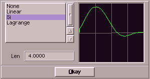

You can select an interpolationtype and eventually adjust a parameter in this
window. The effect of the chosen type will be displayed graphically.
When digitizing a sound, the hardware takes probes after very short intervals. This results
in the digitized wave-form. But some effects need values between these probe-points. Here too SoundFX is flexible
and offers a rich choice:
| choice | description |
|---|
| None | no interpolation (the nearest value will be taken) |
| Lin | linear interpolation |
| Si | curved interpolation over points |
| Lagrange | curved interpolation over points |
For the last two methods it is necessary to specify the size of the interpolation range, which is how many surrounding
values should be taken into account to calculate an inbetween value. Do not make this too big (bigger that 10).
|